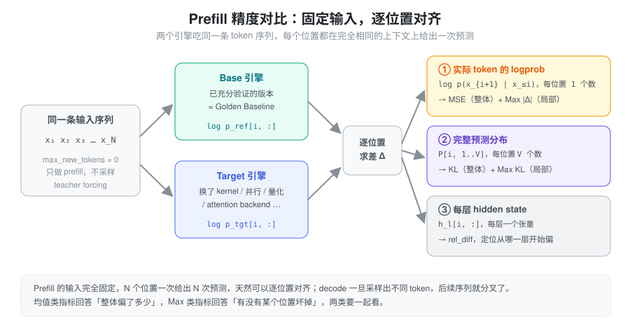
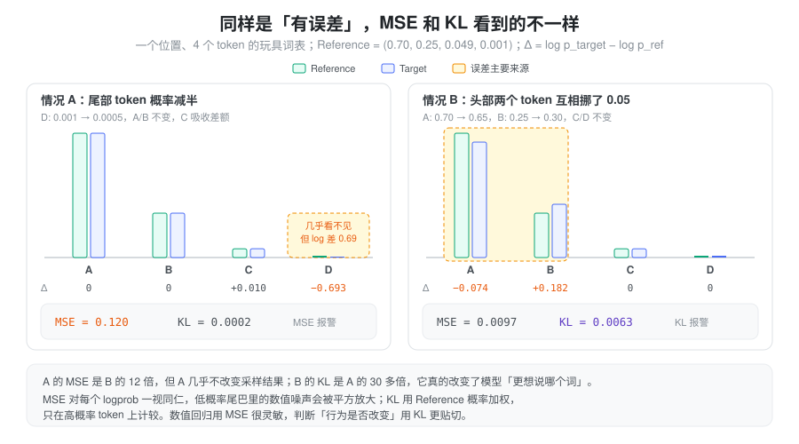
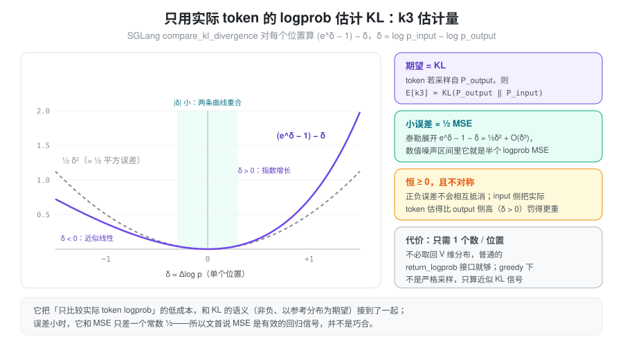
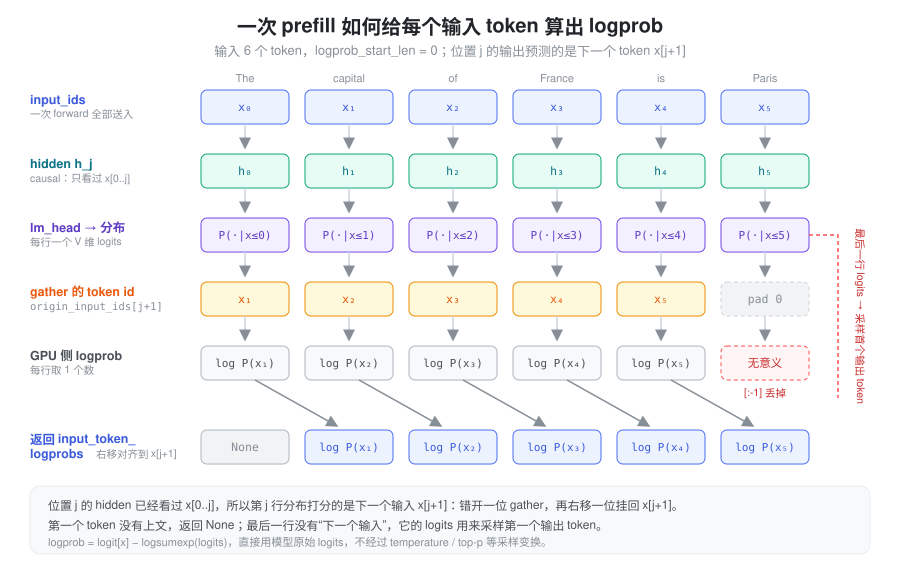
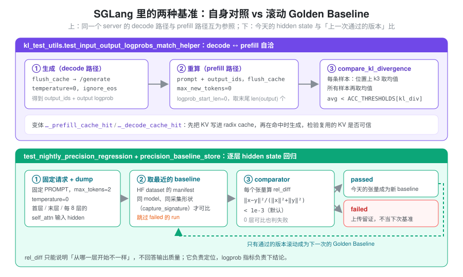

问题：怎么判断“新引擎算得还对”
推理引擎几乎每天都在变：换 attention backend、上新的融合 kernel、改 TP/DP/CP 切分、调整 chunked prefill 的切法、开 radix cache 复用 KV。每一处改动都可能引入数值偏差，而偏差几乎从不以“报错”的形式出现——服务照常返回，只是模型悄悄变笨了一点。
最直接的检测手段是跑 benchmark（GSM8K、MMLU……），但它有两个问题：
- 不灵敏：分数是大量样本的离散统计，0.5 分的波动可能是噪声，也可能是一个 kernel 在某种 shape 下算错了。
- 不可定位：分数掉了，不知道是哪个请求、哪个位置、哪一层出的问题。
所以需要一种端到端、连续、可逐位置定位的数值信号：拿同一份输入分别喂给“可信的版本”和“待测的版本”，直接比较它们算出来的概率。
抽象：固定输入，逐位置对齐
关键观察是 prefill 天然适合做对比。一条长度为 N 的序列做一次 prefill（teacher forcing），模型在每个位置 i 都基于完全相同的上下文 x_{\le i} 给出一次下一个 token 的预测，一次 forward 就得到 N 组可以一一对齐的结果。
Decode 则不同：只要某一步采样出的 token 不同，后面的上下文就分叉了，之后的比较失去意义。因此即使要验证 decode 路径，常见做法也是把 decode 生成的序列再用 prefill 重算一遍，回到“固定输入”的框架里（见后文 SGLang 的自洽测试）。
在每个对齐的位置上，可以从三个粒度取数据来比：
- 实际 token 的 logprob：\log p(x_{i+1}\mid x_{\le i})，每个位置一个数，几乎所有引擎都能直接返回。对应 Logprob MSE / Max Error。
- 完整预测分布：每个位置一个 V 维分布。对应 KL Divergence / Max KL。
- 每层 hidden state：用来定位“从哪一层开始偏”，而不是判断结果好坏。

每个粒度都要同时看两类统计量：均值类（MSE、平均 KL）回答“整体偏了多少”，最大值类（Max Error、Max KL）回答“有没有某个位置坏掉”。一个只在 chunk 边界上出错的 bug，可能一万个位置里只坏一两个，均值几乎不动，但 Max 会立刻跳出来。
| 目标 | 合适的指标 |
|---|---|
| 检测新旧引擎输出是否变化 | Logprob MSE |
| 衡量完整预测分布的变化 | KL Divergence |
| 检测局部严重数值异常 | Max Logprob Error / Max KL |
| 判断新版本是否更接近高精度结果 | 相对于 Reference 的 MSE / KL 变化 |
基准选谁：Golden Baseline 与高精度 Reference
“和谁比”决定了指标能回答什么问题：
- 高精度 Reference（例如 FP32 / 不做激进融合的实现）：回答“新版本是否更接近真值”。代价是每次都要跑一遍昂贵的参考实现。
- Golden Baseline（已经充分验证过的上一个版本）：回答“新版本有没有变”。它不是真值，但工程上足够。
对于 Prefill 测试，如果 Base 版本已经经过充分验证，那么将它作为工程上的 Golden Baseline 是合理的。此时 Logprob MSE 可以作为非常有效的 Numerical Regression Signal，不需要每次都重新运行高精度 Reference；只有当 MSE 报警、需要判断“这次变化是变好还是变坏”时，才拿高精度 Reference 做裁决。
一个容易忽略的前提：logprob 对 GPU 型号、kernel、torch
版本都很敏感，Golden Baseline 必须和 Target
在同一套硬件与软件环境下生成，跨机器的 baseline
没有意义。SGLang 的
test/manual/test_logprobs.py
在文件头就明确说了这一点，所以它要求贡献者先在本机
gen 一份 baseline 再 test。
Logprob MSE
Logprob 的 MSE（Mean Squared Error，均方误差），就是对两个推理引擎在相同位置、相同 Token 上计算出的 Log Probability 求差、平方，再取平均。
假设 Reference 和 Target 引擎分别输出：
\log p_i^{ref},\quad \log p_i^{target}
那么：
\boxed{ \mathrm{MSE}=\frac{1}{N}\sum_{i=1}^{N} \left(\log p_i^{target}-\log p_i^{ref}\right)^2 }
其中 N 是参与比较的 Token 预测位置数量。RMSE 就是 \sqrt{\mathrm{MSE}}，量纲回到 logprob，更直观。
例如：
| Token 位置 | Reference logprob | Target logprob | 平方误差 |
|---|---|---|---|
| 1 | -1.2 | -1.3 | 0.0100 |
| 2 | -2.5 | -2.4 | 0.0100 |
| 3 | -0.8 | -0.85 | 0.0025 |
| 4 | -3.0 | -3.2 | 0.0400 |
因此：
\mathrm{MSE}=\frac{0.01+0.01+0.0025+0.04}{4} =0.015625
同一组数据的 Max Error 是 \max_i |\Delta_i| = 0.2（位置 4）。MSE 只需要每个位置一个数，计算便宜、对任何数值变化都很灵敏，因此是最常用的回归信号。
KL Divergence
KL Divergence（Kullback–Leibler Divergence，KL 散度） 衡量的是两个概率分布之间的差异。
假设 Reference 和 Target 引擎在同一个 Token 位置输出两个 vocabulary 概率分布：
P_{ref}=(p_1,p_2,\ldots,p_V)
P_{target}=(q_1,q_2,\ldots,q_V)
KL Divergence 定义为：
\boxed{ D_{KL}(P_{ref}\Vert P_{target}) =\sum_{i=1}^{V}p_i\log\frac{p_i}{q_i} }
也可以写成：
D_{KL}(P_{ref}\Vert P_{target}) =\sum_{i=1}^{V}p_i(\log p_i-\log q_i)
这里的 V 是 vocabulary size。第二种写法揭示了它和 MSE 的关系：同样是 logprob 的差，只是用 Reference 概率 p_i 加权后求和，而不是平方后等权平均。
注意，KL 不对称：
D_{KL}(P\Vert Q)\neq D_{KL}(Q\Vert P)
通常把高精度 Reference 放在前面——“以参考分布的视角，看 Target 偏了多少”。
假设只有三个 Token：
| Token | Reference 概率 | Target 概率 |
|---|---|---|
| A | 0.7 | 0.6 |
| B | 0.2 | 0.3 |
| C | 0.1 | 0.1 |
KL Divergence：
D_{KL} =0.7\log\frac{0.7}{0.6} +0.2\log\frac{0.2}{0.3} +0.1\log\frac{0.1}{0.1}
\boxed{D_{KL}\approx0.0268}
MSE 与 KL：看到的误差不一样
两者最大的区别是：
- Logprob MSE：对参与比较的 Logprob 误差直接平方平均，每个 logprob 一视同仁。
- KL Divergence：按照 Reference 概率加权，更关注高概率 Token 的分布变化。
下图用一个 4-token 的玩具词表构造了两种“误差”：A 只动了一个概率 0.001 的尾部 token，B 在两个头部 token 之间挪了 0.05 的概率。

情况 A 中尾部 token 概率减半，log 差高达 0.69，MSE 被平方放大到 0.12；但这个 token 几乎不可能被采到，KL 只有 0.0002。情况 B 的 log 差都不大，MSE 不到 A 的十分之一，但它实实在在地改变了模型“更想说哪个词”，KL 高出 A 三十多倍。
这正是两种指标的分工：低概率尾巴里的数值噪声（bf16 下 softmax 尾部本来就不精确）会让 MSE 显得很吓人，却不影响生成；KL 对模型最终预测行为的衡量通常更有意义。反过来，MSE 的“过度灵敏”在回归检测里恰恰是优点——任何数值路径的改变它都能看到。
| 对比维度 | Logprob MSE | KL Divergence |
|---|---|---|
| 需要完整 vocabulary | 不需要，可以只比较 selected logprob | 需要 |
| 衡量数值一致性 | 很适合 | 适合 |
| 衡量概率分布差异 | 有限 | 很适合 |
| 对低概率 Token 敏感性 | 较高 | 通常较低 |
| 计算成本 | 低 | 较高 |
| 发现少量异常位置 | 结合 Max Error | 结合 Max KL |
只用一个 logprob 估 KL：k3 估计量
完整 KL 需要每个位置取回 V 维分布（V 动辄十几万），对线上引擎的接口和带宽都不友好。一个折中是：只用实际 token 的 logprob，构造一个期望等于 KL 的估计量。
设实际 token x 来自分布 P，两边对它的 logprob 之差为 \delta=\log Q(x)-\log P(x)，令
\boxed{ k_3(\delta)=(e^{\delta}-1)-\delta }
则 \mathbb{E}_{x\sim P}[k_3]=\mathbb{E}_{P}\!\left[\tfrac{Q}{P}\right]-1-\mathbb{E}_{P}\!\left[\log\tfrac{Q}{P}\right]=0+D_{KL}(P\Vert Q)。它有三个好性质：
- 无偏：期望恰好是 KL，且只需要每个位置一个数。
- 恒非负：e^\delta\ge 1+\delta，正负误差不会像直接平均 \delta 那样相互抵消。
- 小误差下就是半个平方误差：泰勒展开 k_3=\tfrac12\delta^2+O(\delta^3)。在数值噪声的量级里，它和 Logprob MSE 只差一个常数 \tfrac12。

最后一点把前文两个指标串了起来：MSE 之所以是有效的回归信号，是因为在误差小的时候它本身就近似（两倍的）KL；只有误差大到 |\delta| 接近 1 时两者才分道扬镳，此时 k3 对 \delta>0 一侧惩罚更重。需要注意，greedy（temperature = 0）生成的 token 不是从分布中采样的，严格说期望不再等于 KL，k3 只能当作“近似 KL 信号”使用。
每个输入 token 的 logprob 是怎么算出来的
前面所有指标都假设“每个输入位置都有一个 logprob”。这个数的来历值得单独讲清楚，因为它有一个容易弄错的错位。
Causal attention 下，位置 j 的 hidden state h_j 只看过 x_{\le j}。它经过 lm_head 得到的分布 P(\cdot\mid x_{\le j}) 预测的是下一个 token，所以这一行能打分的是 x_{j+1}，而不是 x_j 自己：
\log p(x_{j+1}\mid x_{\le j}) = z_j[x_{j+1}] - \operatorname{logsumexp}(z_j)
其中 z_j 是第 j 行的原始 logits。于是一次长度为 N 的 prefill：
- 产出 N 行分布，前 N-1 行分别给 x_1,\ldots,x_{N-1} 打分；
- 第一个 token x_0 没有上文，没有 logprob，返回 None；
- 最后一行没有“下一个输入”可以打分，它正是用来采样第一个输出 token 的那一行。

实现上就是两次错位：GPU 上第 j 行 gather 的是
x[j+1]；返回给用户前再右移一位，把结果挂到
x_{j+1} 下面，使
input_token_logprobs[i] 和
input_ids[i] 一一对应。
一个可以手算的例子
为了好算，假设词表只有 4 个 token：A、B、C、D。输入是
[A, C, B]，logprob_start_len = 0。
| 返回位置 i | 用哪个 hidden | logits (A, B, C, D) | log_softmax 后 (A, B, C, D) | 真实 token x_i | 返回值 |
|---|---|---|---|---|---|
| 0 | - | - | - | A | None |
| 1 | h_0（只看过 A） | 2.0, 1.0, 0.5, −1.0 | −0.50, −1.50, −2.00, −3.50 | C | −2.00 |
| 2 | h_1（看过 A C） | 0.0, 3.0, 1.0, 0.0 | −3.21, −0.21, −2.21, −3.21 | B | −0.21 |
| （丢弃） | h_2（看过 A C B） | … | … | 第一个输出 token | 属于
output_token_logprobs |
位置 1 的计算：
\operatorname{logsumexp} = \log\left(e^{2}+e^{1}+e^{0.5}+e^{-1}\right)\approx 2.50
所以 C 的 logprob 是 0.5-2.50=-2.00。位置 2 同理，\operatorname{logsumexp}\approx 3.21，B 的 logprob 是 3.0-3.21=-0.21。
如果请求里带 top_logprobs_num=2，位置 1
还会在 input_top_logprobs
里返回分布中最高的两个
token：[(A, −0.50), (B, −1.50)]（实际接口返回的是
(logprob, token_id, text)
三元组，这里简写）。注意 top-k 看的是 h_0 这一行的整个分布，和真实
token C 是否在其中无关。
SGLang 的计算路径
要 logprob 的 token 必须真正算一遍（
managers/schedule_batch.py）。logprob_start_len指定从哪个输入位置开始返回 logprob，-1 表示不要输入 logprob。命中 radix cache 的前缀不会重新 forward，也就没有 hidden state，所以Req._compute_max_prefix_len把可复用的前缀限制在min(input_len - 1, logprob_start_len)以内。随后为本次 extend 准备错一位的目标 id：origin_input_ids[start+1 : end+1]，序列末尾不够的位置补 0（图中的 pad 0），id 还会 clamp 到vocab_size - 1，防止多模态的 hash token 越界。Chunked prefill 下这一步按 chunk 做，源码注释的例子是输入[1,2,3,4]切成[1,2]、[3,4]，目标 id 分别是[2,3]和[4,0]。只把需要的行送进 lm_head（
LogitsProcessor._get_pruned_states，layers/logits_processor.py）。不要 logprob 时，每条序列只保留最后一个 token 的 hidden，lm_head 只算 batch size 行。要 logprob 时保留每条序列[start_len, extend_len)这一段，并生成三组索引：sample_indices指向每条序列的最后一行，交给采样；input_logprob_indices指向参与 input logprob 的行；token_to_seq_idx记录每行属于哪条序列。如果某个 chunk 里一个要 logprob 的位置都没有（extend_len == start_len），会把start_len减 1，保证最后一行仍然留给采样。只算需要的那一个数，不展开整个 log_softmax（
InputLogprobProcessor，layers/logprob_processor.py）。logits 是[行数, V]的矩阵，32k token × 15 万词表的 fp32 log_softmax 约 20 GB。所以这里按行分块（SGLANG_LOGPROB_CHUNK_SIZE，默认 2048），并默认走快路径：每行只在 fp32 下算一个归一化常数（row_max加logsumexp），再用目标 token 的 logit 减去它，不物化 V 维结果；需要 top-k 时，一个融合 kernel 在一次读 logits 的过程中同时得到归一化常数和 top-k。开启 deterministic inference 时退回精确的log_softmax，因为换一种规约顺序，prefill 和 decode 算出的 logprob 就不再 bit-exact。跨 chunk 拼接，最后右移（
SchedulerLogprobResultProcessor，managers/scheduler_components/logprob_result_processor.py）。Chunked prefill 每一轮把本 chunk 的结果追加到请求上，只在最后一个 chunk 收尾：返回值是[None] + logprobs[:-1]，丢掉的末尾元素就是 pad 0 那一行；对应的 token id 是origin_input_ids[logprob_start_len:]，最后断言两者等长。Top-k 和指定 token id 的 logprob 也做同样的处理。
还有一个和精度测试直接相关的细节：input logprob
不受采样参数影响，它直接用 lm_head 的原始
logits，只经过
logit_scale、final_logit_softcapping
这类模型自带的变换。Output logprob
则不同：layers/sampler.py 在非 greedy 时先把
logits 原地除以 temperature 再算 logprob（除非设置
SGLANG_RETURN_ORIGINAL_LOGPROB）。所以 decode
的 output logprob 和 prefill 的 input logprob 只有在
temperature = 0 时才是同一个量，这也是下面的自洽测试用
greedy 生成的原因。
SGLang 里的实现
SGLang 的测试代码里同时存在上面几种思路，按“和谁比”可以分成两类：自身对照（同一个 server 的两条计算路径互为参照）和滚动 Golden Baseline（今天的结果和上一次通过的版本比）。

decode ↔︎
prefill 自洽：kl_test_utils.py
python/sglang/test/kl_test_utils.py 里的
test_input_output_logprobs_match_helper
不需要任何外部 baseline：
flush_cache后用/generate以temperature=0、ignore_eos生成，记下output_ids和每个输出 token 的 logprob——这是 decode 路径算出的值；- 把
prompt + output_ids作为新输入，再次flush_cache，以max_new_tokens=0、logprob_start_len=0做一次纯 prefill，取input_token_logprobs的末尾len(output)个——这是 prefill 路径对同一批 token 算出的值； compare_kl_divergence对每条样本逐位置算 k3 并取均值，再对样本取均值，要求小于ACC_THRESHOLDS[model]["kl_div"]。
第二次之前的 flush_cache 是关键：否则
prefill 会命中 radix cache，直接复用 decode 时写下的
KV，等于拿结果和自己比。两个变体
..._prefill_cache_hit_helper /
..._decode_cache_hit_helper
则反过来故意先把 prefix
写进缓存、在命中时生成，再用无缓存的 prefill
做参照，专门检验“复用的 KV
是否和重算一致”；它们还会断言命中率超过一半，避免一次没命中的“空跑”被当成通过。
阈值随场景而定：radix cache 系列的测试大多在
0.0025 ~ 0.03 之间，强调 bit-exact
的混合模型测试则用 1e-9。
Top-k
logprob 的 Max / Mean
误差：test_logprobs.py
test/manual/test_logprobs.py 是“Golden
Baseline + Max Error”的直接体现：先在本机生成一份
baseline（ShareGPT 采样，记录 top-20
logprob），改代码后在不同 chunked_prefill_size
× max_running_requests
组合下重跑，对两边共同出现的 top-k token 取
|Δlogprob|，每条样本的 max 和 mean 都必须
≤ 1e-5。扫 chunk 大小和并发，本质是在检验
prefill 结果对 batch 组成和切块方式是否不变。
逐层 hidden state 回归：nightly precision
test/registered/debug_utils/test_nightly_precision_regression.py
走的是第三个粒度。它用固定
prompt、temperature=0、max_tokens=2
请求 server，通过 dumper 抓取首层、末层和每隔 8 层的
self_attn 输入 hidden state，再交给
sglang.srt.debug_utils.comparator
逐张量计算
\mathrm{rel\_diff}=1-\frac{2\langle x,y\rangle}{\Vert x\Vert^2+\Vert y\Vert^2}=\frac{\Vert x-y\Vert^2}{\Vert x\Vert^2+\Vert y\Vert^2}
默认阈值
1e-3（SGLANG_PRECISION_DIFF_THRESHOLD
可调）。这个指标对整体缩放不敏感、只看方向和相对大小，适合比较量级差异很大的各层激活。
Baseline 的管理在
python/sglang/test/precision_baseline_store.py，存放在
HF dataset 上，有两处设计值得一提：
- 只有可比的才比：manifest 里每次 run
带一个
capture_signature（采集了哪些层、TP 大小等），取 baseline 时只选同 model、同 signature 的记录；对不上就重新建立 baseline，而不是拿形状不同的张量硬比。 - 失败的 run
不能成为下一次的基准：
_select_latest_run优先跳过pass_label == "failed"的记录。否则一次回归被上传后会成为第二天的 baseline，持续存在的回归就被“洗白”了。失败的张量照样上传，只是作为诊断证据。另外，comparator 实际比较了 0 层也判失败，防止张量命名对不上导致的“空通过”。
逐层 rel_diff 只能说明“从哪一层开始不一样”，不直接回答输出质量；它负责定位，logprob 层面的指标负责下结论。
小结
Prefill 端到端精度测试的核心是一个很朴素的抽象：固定输入，让两个版本在每个位置上给出可对齐的预测，然后比较概率。这些概率来自 prefill 的逐行 logits：第 j 行给 x_{j+1} 打分，用原始 logits、不受 temperature 影响，所以同一份输入在两个版本上得到的是严格可比的同一个量。Logprob MSE 便宜、灵敏，配合一份同环境下充分验证过的 Golden Baseline 就是好用的回归信号；KL 用参考概率加权，更贴近“模型行为有没有变”；k3 估计量让我们只用一个 logprob 就拿到近似 KL，并解释了为什么小误差下 MSE 和 KL 说的是同一件事。再配上 Max 类指标抓局部异常、逐层 rel_diff 定位源头，就构成了从“有没有变”到“哪里变了”的完整链条。